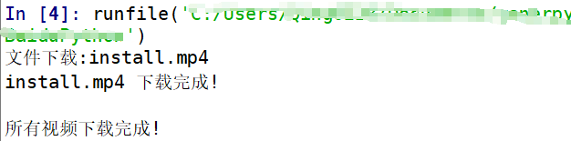

使用python爬取视频网站时，会得到一系列的视频链接，比如MP4文件。得到视频文件之后需要对视频进行下载，本文写出下载视频文件的函数。
首先导入requests库，安装库使用pip install requests。
其中video_links是之前爬取到的所有视频文件链接的一个列表。保存的视频文件名为视频链接中的文件名称。使用link.split('/')将链接进行切分，获取到一个列表，选择列表的最后一个元素即为带有后缀名的视频文件名称。
requests.get()用于请求目标网站，类型是一个HTTPresponse类型。
使用with open写入目录文件。
import requests
def download_videofile(video_links):
root='保存文件位置'
for link in video_links:
file_name = link.split('/')[-1]
print("文件下载:%s" % file_name)
r = requests.get(link, stream=True).iter_content(chunk_size=1024 * 1024)
with open(root+file_name, 'wb') as f:
for chunk in r.iter_content(chunk_size=1024 * 1024):
if chunk:
f.write(chunk)
print("%s 下载完成!\n" % file_name)
print("所有视频下载完成!")
return
if __name__ == "__main__":
video_links=[视频链接1]
download_video_series(video_links)运行结果图如下：
